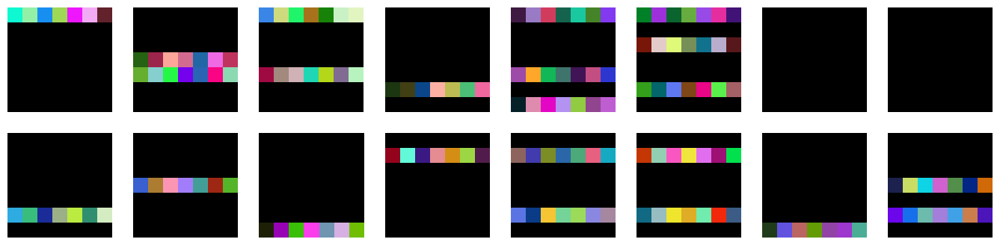

get_pruned_conv('weight')Granularity
What block of parameter to remove in a neural network ?
Conv2d Pruning
A Conv2d layer possess a 4d-tensor as weights. This means that there exist many ways of removing blocks from it.
0-D Blocks
In the case of convolution filters, removing 0-D elements is equivalent to removing individual weights.
weightgranularity
1-D Blocks
1-D blocks of elements is equivalent to removing vectors from the convolution filters. There are several ways to chose the vectors, that will be represented below.
shared_weight: this granularity is very particular as it removes individual weights from a filter, but with a pattern that is shared across all filters.
get_pruned_conv('shared_weight')channel: remove vector of weights along the channel axis.
get_pruned_conv('channel')column: remove vector of weights along the height axis.
get_pruned_conv('column')row: remove vector of weights along the width axis.
get_pruned_conv('row')2-D Blocks
shared_channel: remove vector of weight along the channel axis, but with a pattern that is shared across all filters.
get_pruned_conv('shared_channel')shared_column: remove vector of weight along the height axis, but with a pattern that is shared across all filters.
get_pruned_conv('shared_column')shared_row: remove vector of weight along the width axis, but with a pattern that is shared across all filters.
get_pruned_conv('shared_row')vertical_slice: remove vertical slices of weight along the height axis.
get_pruned_conv('vertical_slice')horizontal_slice: remove vertical slices of weight along the width axis.
get_pruned_conv('horizontal_slice')
kernel: remove kernels of from the convolution filters.
get_pruned_conv('kernel')3-D Blocks
shared_vertical_slice: remove vertical slices of weight along the height axis, with a pattern that is shared across all filters.
get_pruned_conv('shared_vertical_slice')shared_horizontal_slice: remove horizontal slices of weight along the width axis, with a pattern that is shared across all filters.
get_pruned_conv('shared_horizontal_slice')shared_kernel: remove kernels of weight from the convolution filters, with a pattern that is shared across all filters.
get_pruned_conv('shared_kernel')filter: remove entire filters.
get_pruned_conv('filter')Linear Pruning
0-D Blocks
As for the convolution filters, weights from a Linear layer can be removed independently.
weight: remove individual weights.
get_pruned_linear('weight')
1-D Blocks
column: remove column of weight, which corresponds to removing input neurons.
get_pruned_linear('column')row: remove rows of weight, which corresponds to removing output neurons.
get_pruned_linear('row')Transformer Pruning
Note
This is an experimental part of the library